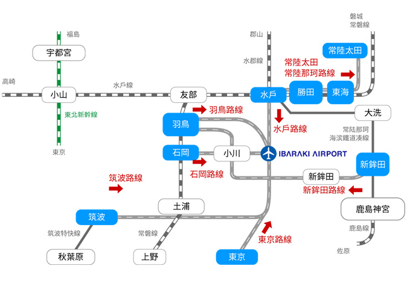
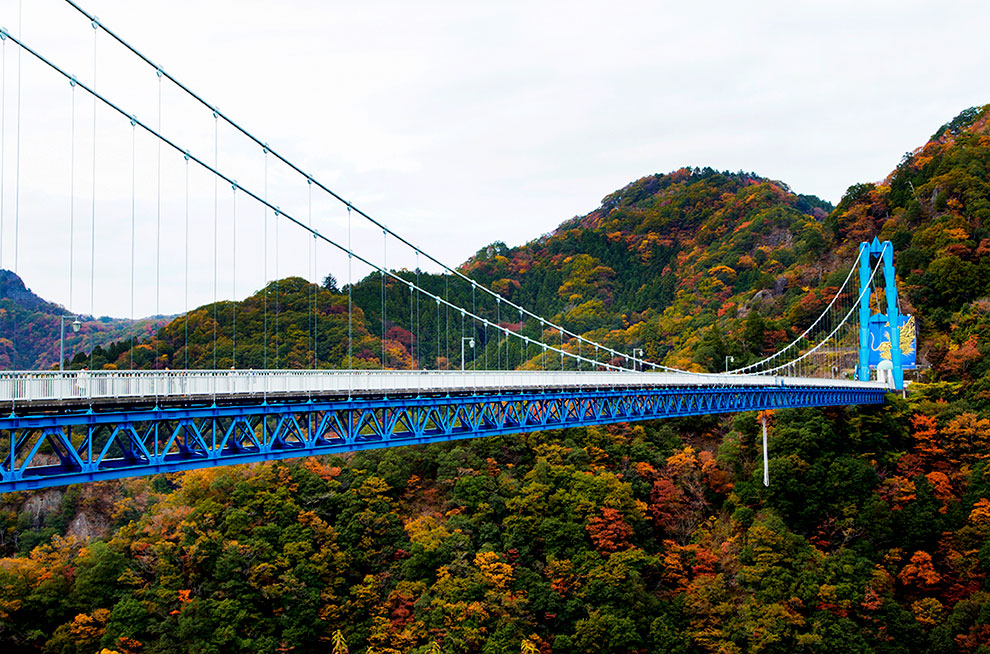

搭乘時間：2018/10/28-2019/03/30
| 航班號 | 航線 | 起飛時間 | 抵達時間 | 飛行日 |
| IT218 | 桃園－茨城 | 09:25 | 13:35 | 每周四、日 |
| IT219 | 茨城－桃園 | 14:35 | 17:40 | 每周四、日 |

巴士：
由茨城機場前往水戶、筑波、鉾田、宇都宮、石岡、常陸太田、日立、東海、 常陸那珂、小美玉方向。
東京直達巴士：搭乘班機的乘客，僅需500日圓即可乘坐從東京站到茨城機場的直達巴士！
▪預約期間：從乘車日的1個月前到乘車前一日的晚間7點為止
▪預約方式：請注意本巴士採提前預約制
▪網路預約：http://kantetsu.co.jp/bus_reserve/
▪電話預約：關東鐵道水戶營業所 +81-029-304-5080
▪單程車資：搭乘飛機的旅客500日圓 ; 非搭乘飛機的旅客1,200日圓
▪乘車處指南：JR東京站 八重洲南口高速巴士站 3號站台 (下車處位於東京站日本橋出口)
▪時刻表：
| 茨城機場 | 5點40分 | 8點30分 | 9點50分 | 11點10分 | *13點30分 | *15點10分 (星期日、四) |
*17點15分 (星期二、四、六) |
18點40分 | *19點40分 | *21點10分 |
| 東京機場 | 8點10分 | 11點00分 | 12點20分 | 13點40分 | 16點00分 | 17點40分 | 19點45分 | 21點10分 | 22點10分 | 23點40分 |
※時刻表依茨城空港網頁公告為準
※週日及國定假日，抵達東京站的預定時刻會提前約30分鐘
※標示「*」記號的車次依據航班抵達狀況延遲發車
租車：在茨城機場利用租車遊覽很方便，24小時以內基本費用1,000日元。
適用時間：2018年4月1日開始到2019年3月31日為止
| 優惠車型．費用 | 超值大優惠活動期間 | ||
| 2018/4/1 – 2019/3/31 | |||
| 套餐內容 | 車型級別 | ||
| 基本費用 | |||
| 24小時以內 | 超過24小時 （48小時以內） |
||
| 乘員1位時 | 小型轎車 （P1、HV1） |
JPY2,000 | JPY2,000 |
| 乘員2位以上時 | JPY1,000 | JPY1,000 | |
| 乘員4位以上時 | 標準型轎車 （P3、HV2） |
JPY2,000 | JPY2,000 |
| 乘員5位以上時 | 商務型麵包車 （W1、W2） |
JPY3,000 | JPY3,000 |
※只限在此活動期間借用和返還為對象
※48小時之後將恢復壹般使用價格
※車型指定或者額外追加選項需要另外收取費用


國營常陸海濱公園
海濱公園內四季都有不同花卉可欣賞，尤其春末的粉蝶花和秋季的掃帚草更是人氣十足
偕樂園
日本三大名園之一。暮冬初春時3,000株梅花綻放，整個全區縈繞淡雅芬芳，令人難忘

龍神大吊橋
本州最長的行人專用吊橋，不僅可欣賞壯麗景致，若喜愛極限運動還可在此嘗試高空彈跳呢

水戶納豆
納豆是日本傳統食品，以稻草包裝的水戶納豆，以其獨特的香氣和口感吸引不少消費者
鮟鱇魚
「西之河豚，東之鮟鱇」是日本饕客心中的美味食材。鮟鱇是茨城冬季美食代表，人氣超高

番薯乾
茨城縣的代表特產，產量高達全日本9成以上，營養價值高且低脂，非常適合當零嘴